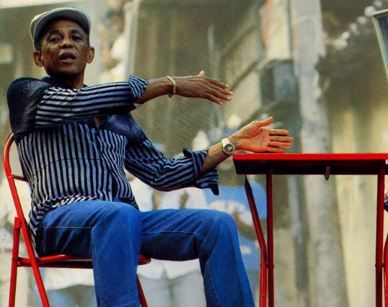

Apresentação

Sobre o artista
O Seu nome é Bezerra da Silva, carioca RJ Belford Roxo.
Por que escolhi essa música?
Escolhi a música Bicho Feroz porque ela apresenta uma crítica direta à falsa demonstração de coragem.Na minha interpretação, a música questiona pessoas que aparentam coragem quando estão armadas, mas agem de outra maneira quando precisam enfrentar as consequências de seus atos.